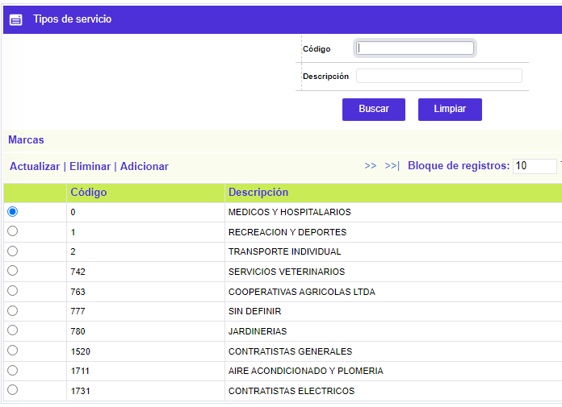
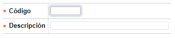
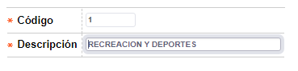
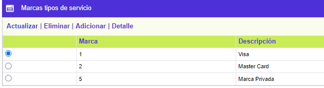
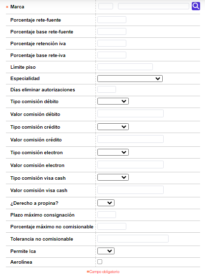
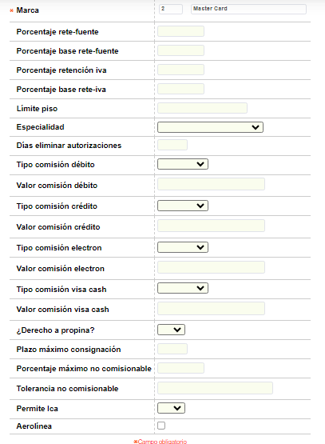
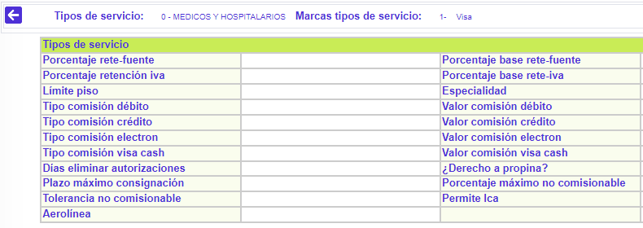

Tipos de servicio
Mediante esta función se permite la consulta y mantenimiento de la tabla que contiene la codificación de los diferentes tipos de servicio que ofrecen los establecimientos pertenecientes a la entidad financiera y para cada uno de estos, se definen valores y condiciones específicos.

El formulario contiene las opciones Actualizar, Eliminar y Adicionar. Adicionalmente contiene el hipervínculo Marcas en el cual se definen las condiciones que aplican para cada tipo de servicio.
Adicionar: Si el usuario invoca la opción Adicionar se despliega un nuevo formulario

Descripción de campos
|
Código |
Campo numérico de 4 dígitos, obligatorio, asignado a cada uno de los tipos de servicio o bien ofrecidos por los establecimientos. |
|
Descripción |
En este campo alfanumérico de 30 posiciones, obligatorio, se registra el nombre asociado a cada tipo de servicio. |
Actualizar: Si el usuario invoca la opción Actualizar se despliega un nuevo formulario en el cual el único campo modificable es Descripción.

Marcas: Bloque que permite conocer las marcas o franquicias sobre las que tiene validez o aplica la codificación desplegada en el bloque anterior. Cuenta con las opciones Actualizar, Eliminar,Adicionar y Detalle. Asi mismo posee un boton que permite regresar a la opción Tipos de servicio.

Adicionar: Si el usuario invoca la opción Adicionar se despliega un nuevo formulario .

Descripción de campos
|
Código Marca |
Campo numérico de 3 posiciones, obligatorio, en el cual se digita el código de cada una de las marcas o si se prefiere se puede seleccionar de la lista de valores las franquicias a las cuales pertenece el establecimiento. |
|
Descripción |
Despliega el nombre de la marca o franquicia seleccionada. |
|
Porcentaje Rete-fuente |
Campo que permite registrar el valor porcentual de la tasa a aplicar por retención en la fuente, sobre el resultado del porcentaje base definido en el campo siguiente. Cabe anotar que el sistema busca este parámetro en primer lugar a nivel de establecimiento; si no está definido allí, tiene en cuenta el valor aquí registrado, y de no estar aquí, se remite a los Parámetros operativos; lo mismo aplica para los 3 campos siguientes. |
|
Porcentaje base Rete-fuente |
Permite definir el valor porcentual a aplicar y calcular sobre los consumos (u otros conceptos asimilables), sobre cuyo resultado se liquidará el impuesto de retención en la fuente. |
|
Porcentaje Retención Iva |
Campo en el que se registra el valor porcentual de la tasa a aplicar por dicho impuesto, sobre el resultado del porcentaje base retención IVA obtenido. |
|
Porcentaje base Rete-Iva |
En este campo se define el valor porcentual a aplicar y calcular sobre el valor del IVA reportado por los establecimientos en las consignaciones, para establecer la base de cálculo de la Retención a hacer por este concepto. |
|
Límite Piso |
En este campo numérico de 18 posiciones, no obligatorio, se registra el valor del límite de piso o valor a partir del cual se requiere solicitar autorización, que regirá por defecto para los establecimientos que perteneciendo a cada tipo de servicio no lo hayan definido para cada uno de éstos. |
|
Especialidad |
Campo que posee lista de valores de la cual se selecciona la especialidad asociada al tipo de servicio. La especialidad corresponde a una clasificación superior, que agrupa a varios tipos de servicio. |
|
Días eliminar Autorizaciones |
En este campo se define la cantidad de días calendario que deben pasar entre la solicitud de autorización y la eliminación de la misma, liberando el disponible cuando el movimiento no llega por canje. En caso de que este valor no esté definido aquí, el sistema lo busca en Parámetros operativos. |
|
Tarjeta Dèbito |
Opción que permite definir de manera excluyente si la cifra relacionada en el campo Valor ubicado a continuación, corresponde a un porcentaje o un valor absoluto. |
|
Valor |
Campo numérico de 18 dígitos no obligatorio, en el que se registra acorde a lo definido en el campo anterior, el valor absoluto o porcentual a descontar a manera de comisión a los establecimientos por transacciones realizadas con productos débito y que aplicará por defecto a los comercios pertenecientes a cada tipo de servicio. |
|
Tarjeta Crèdito |
Opción que permite definir de manera excluyente si la cifra relacionada en el campo Valor ubicado a continuación, corresponde a un porcentaje o un valor absoluto. |
|
Valor |
Campo numérico de 18 dígitos no obligatorio, en el que se registra acorde a lo definido en el campo anterior, el valor absoluto o porcentual a descontar a manera de comisión a los establecimientos por transacciones realizadas con tarjetas de crédito y que aplicará por defecto a los comercios pertenecientes a cada tipo de servicio. |
|
Tarjeta Electrón |
Opción que permite definir de manera excluyente si la cifra relacionada en el campo Valor ubicado a continuación, corresponde a un porcentaje o un valor absoluto. |
|
Visa Cash |
Opción que permite definir de manera excluyente si la cifra relacionada en el campo Valor ubicado a continuación, corresponde a un porcentaje o un valor absoluto. |
|
Valor |
Campo numérico de 18 dígitos no obligatorio, en el que se registra acorde a lo definido en el campo anterior, el valor absoluto o porcentual a descontar a manera de comisión a los establecimientos por transacciones realizadas con productos Visa cash y que aplicará por defecto a los comercios pertenecientes a cada tipo de servicio. |
|
Derecho propina |
Indicador de si los establecimientos pertenecientes a cada tipo de servicio, tienen o no derecho a la liquidación y cobro de propina. Si este indicador esta inactivo, los campos % máximo no comisionable y Tolerancia no comisionable, se desactivarán. |
|
Plazo màximo consignación |
Campo numérico de 2 dígitos, no obligatorio, que señala la cantidad máxima de días hábiles que la entidad concede como plazo por defecto para la captura de las consignaciones efectuadas por los establecimientos, en caso en que dicho dato no aparezca dentro de la información de cada establecimiento. Si el plazo tampoco está definido en este campo, el sistema lo busca en Parámetros operativos. |
|
Porcentaje màximo no comisionable |
En este campo numérico de 9 posiciones, no obligatorio, se registra el valor porcentual máximo o tope para el cobro de propina acordado por la franquicia. Si no se define un valor para el establecimiento, el sistema asigna el valor que por defecto presente el nivel de tipo de servicio o en su ausencia el valor determinado por la franquicia. |
|
Tolerancia no comisionable |
Campo numérico de 9 posiciones no obligatorio, en el que se registra el valor absoluto máximo acordado entre el emisor y el operador (franquicia) en que puede excederse el monto de comisión cobrado. Si no se define un valor para el establecimiento, el sistema asigna el valor que por defecto presente el nivel de tipo de servicio o en su ausencia el valor determinado por la franquicia. |
|
Permite Ica |
Esta casilla se marca para indicar si para cada tipo de servicio la norma autoriza o no aplicar la retención del impuesto de industria y comercio ICA, en principio se eximen aquellos relacionados con el expendio de gasolina. Acorde con la manera de proceder de cada franquicia respecto del control de la información sobre los establecimientos, debe tenerse cuidado respecto de la marcación de este indicador. |
|
Aerolínea |
Esta casilla se marca para indicar si el establecimiento corresponde a una aerolínea. |
Actualizar: Si el usuario invoca la opción Actualizar se despliega un nuevo formulario en el cual los únicos campos modificables son: Porcentaje rete-fuente, Procentaje base rete-fuente, Porcentaje retención iva, porcentaje base rete-iva, límite piso, Especialidad, Días eliminar autorizaciones, Tarjeta débito, Valor, Tarjeta crédito, Valor, Tarjeta electrón, valor, Visa cash, Valor, Derecho propina, plazo máximo consignación, porcentaje máximo no comisionable, tolerancia no comisionable, permite ica, Aerolínea.

Detalle: Si el usuario invoca la opción Detalle se despliega el siguiente formulario.
